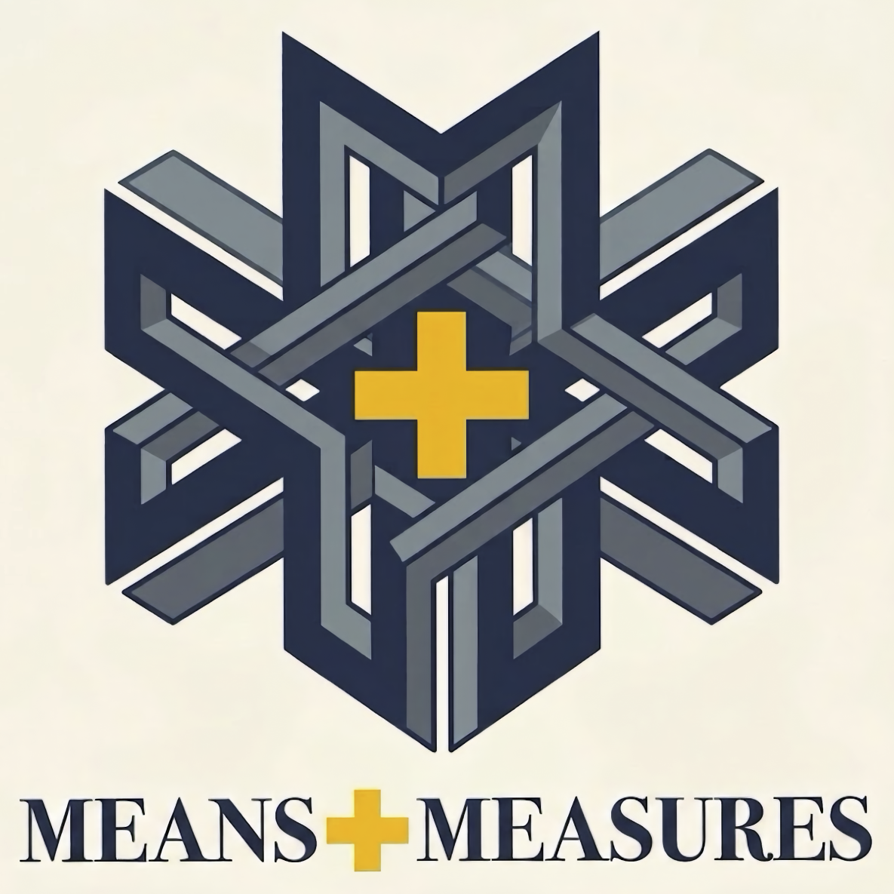

A consequential decision.
Spectral Semibold
.mm-type-displayMeans+Measures
CSS reference · 1.0.0
Identity Standard v1.5 · Typography amendment 2026-10-14
Institutional language, sustained prose, operational controls, exact values, concise actions and human detail each have their own voice.
Spectral declares and explains.
Metrophobic operates. Iosevka measures.
Pompiere acts and annotates.
Montserrat catches exceptions.

A consequential decision.
.mm-type-displayProvenance · Continuity · Constraint
.mm-type-institutionalA consequential decision should be reconstructable from the records it produced.
.mm-type-bodyFigure 4 · Source and provenance
.mm-type-editorialFilter results · Jurisdiction: all
.mm-type-uiREC-00931 · 12.4 / 100,000
.mm-type-dataView report · Updated today
.mm-type-actionΔ 3.2% ↑ · v1.1.0-β · § 12(a)
.mm-type-specialty12.4 / 100,000
Reported incidence increased relative to the preceding period.
Updated today
Illustrative data only. This component demonstrates typography by information function; it is not a live statistical report.
#828A90#293044#E5B52D#F4F7F8#FAF3E7#263238#5B6067#006D75#FF7F00#2E7D32#8A4B00#C2185B#FF0000#127290#4FC3E8The first three values belong to the identity artwork. Operational colors are separate. The cream surface token does not settle whether the logo should have an independent or transparent background.